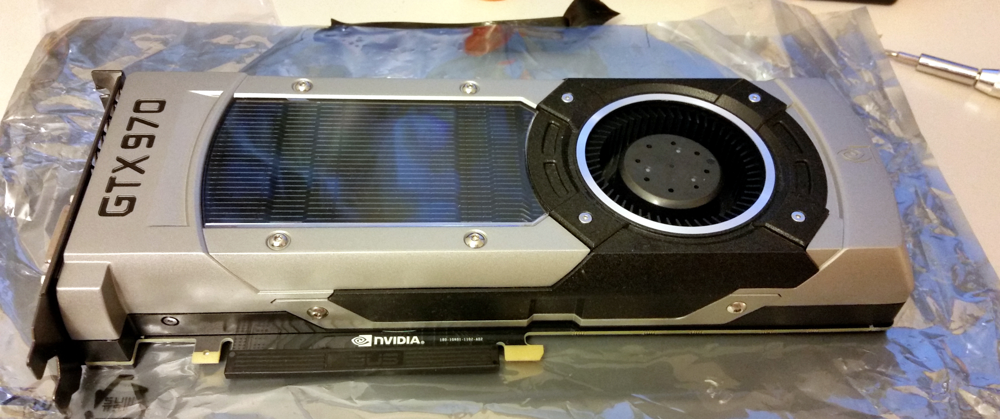

Replacing the Fan of a NVidia GTX 970 Reference Edition
Sat, 06 May 2017
Computer Repair, Computers, Gpu, Hardware
I recently acquired a NVidia GTX 970 Founder's Edition. The device had a damaged fan. As can be
clearly seen in the photo, the fan did not sit properly in the mount. This caused the fan to scrape against its metal housing, preventing it from spinning. Actually it's not clear at all. Nevertheless, the side closest to the camera is higher than the other.
Upon further investigation, the base of the fan was found to be cracked. The crack can be seen in the photo that follows.
Okay. The crack was not quite as extensive originally. But, after several failed super-glue attempts, I decided to go for the hail-Mary. Unfortunately, my last ditch effort was likewise unsuccessful. Rather then spending more time and money on an epoxy-frankenstein kludge, I thought a replacement fan would make a substantially less dubious solution. I ordered a Delta 65mm 37mm BFB0712HF fan.
After several days on pins and needles, imagining all the things that might go wrong, the fan arrived. Quite unexpected (given my luck) it was a perfect fit; the fan was nearly, if not truly, identical to the original fan. The third fan screw is under one of the heat pads, by the way.
Now begins the tedious process of reassembling the GPU. In projects like this, I find it very helpful to stay organized. So, basically,
not like this:
As an aside, one of the benefits of having your health reduced to shambles is that you have a lot of extra containers to organize screws. Life is chock-full of such silver linings.
Next I cleaned off the old thermal paste and took several scandalous photos of my new GPU.
For thermal paste I used Artic Silver 5. I started using that brand because other people use it. And those people probably did much the same. And so on, etc. Flawless logic. Except that Intel uses thermal paste produced by Dow Corning. Hmm.

All Done! Now for the nerve-wracking part. Images of my rig going up in smoke and taking the rest of the apartment with it flash before my eyes.
Anyway, it works. Cool.
Even better its averaging 35c under load and the fan is pretty quiet. Nice!
{kind=link}
{kind=link}
{kind=link}
{kind=link}